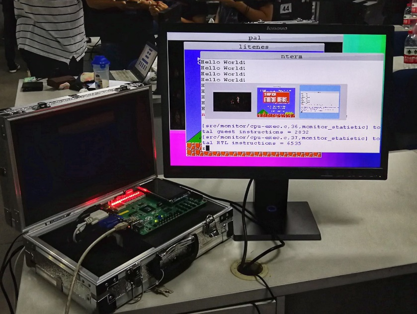

AbstractMachine: 抽象计算机

AbstractMachine 是裸机上的 C 语言运行环境，提供 5 组 (15 个) 主要 API，可以实现各类系统软件 (如操作系统)：
- (TRM)
putch/halt- 最基础的计算、显示和停机 - (IOE)
ioe_read/ioe_write- I/O 设备管理 - (CTE)
ienabled/iset/yield/kcontext- 中断和异常 - (VME)
protect/unprotect/map/ucontext- 虚存管理 - (MPE)
cpu_count/cpu_current/atomic_xchg- 多处理器
- AbstractMachine 简介
- 规约与文档
## 1. 简介
我们在 C 程序中调用 AbstractMachine API 就能实现操作系统，从而不需要知道底层硬件的中断、虚拟存储等是如何在指令级实现的——这是计算机系统设计与实现中的一种抽象；一个类似的例子是我们在应用程序里调用 libc 库就能完成绝大部分任务，而不需要知道底层的操作系统 API。这样的设计方法在复杂计算机系统的构造中十分常见：底层系统提供**机制** (mechanism)，上层系统利用这些机制实现**策略** (policy)。典型的机制/策略分离的抽象层有指令集体系结构、系统调用、库函数等；AbstractMachine 属于一种硬件抽象层 (hardware abstraction layer, HAL)。
## 2. 安装与配置
### 2.1. 配置 AbstractMachine
对于操作系统实验的同学，`os-workbench` 中已经包含了 AbstractMachine 代码，并且操作系统实验的框架代码已经完成了配置。如果你使用 Debian/Ubuntu 系统，你在编译代码时可能会遇到一些命令执行失败的情况，通常需要以下软件包 (也可能需要其他软件包，请 STFW)：
* `gcc-multilib` (交叉编译用)
* `libsdl2-dev` (图形库)
* `qemu-system` (全系统模拟器)
如果你希望建立自己的 AbstractMachine 项目 (例如之后的 Hello World 例子) 或编译运行其他示例代码 (microbench, fceux, litenes, ...) 等，则需要先配置好 `AM_HOME` 环境变量 (请 STFW 什么是环境变量。可以用 `env` 命令查看当前的环境变量)，把它设置为 AbstractMachine 目录的**绝对路径**：
你可以把这一行写在 `.bashrc`/`.zshrc` 中，使得不必每次打开终端都重新配置。如果你第一次使用 Linux，这会是一个比较痛苦的过程——你还需要学习 Shell 有关的基础知识。一份不错的入门材料是 MIT 的 “[The Missing Semester of Your CS Education](https://missing.csail.mit.edu/)”。
## 2.2. Hello, AbstractMachine
完成必要软件的安装和正确的 `AM_HOME` 配置后，我们就可以在 AbstractMachine 上编程了。在文件系统的任意目录中创建一个 `.c` 文件和 `Makefile` (参考 `man 3 stdarg`)：
我们就完成了一个**可移植**到多个 “bare-metal” 平台的 Hello World 程序，它们可以直接在模拟器里运行，甚至直接在开发板上运行！当然了，现在编译、链接、运行都会交给 AbstractMachine 中的代码帮忙搞定。
为了编译运行，AbstractMachine 需要知道目标的平台/体系结构，通过 `ARCH` 环境变量指定。例如，我们希望编译出能在 x86-64 (QEMU) 下运行的镜像：
会自动完成编译，得到 `build/` 目录下的若干文件：
不妨用 `objdump -d` 命令查看 `hello-x86_64-qemu.o` 反汇编后的代码，是直接运行在裸机上的 C 程序代码，程序的入口是 `_start`。Makefile 也自带了运行功能，传入 `mainargs` 环境变量，即可将参数传递给 `main` 函数：
你可以尝试其他的 `ARCH` 环境变量：`x86-qemu`, `native`，在不同平台下运行。你也可以 export 默认的 `ARCH=x86_64-qemu`，避免每次键入。
> #### 思考题：`__ISA__`
>
> 我们的 Hello World 程序引用了这个奇怪的宏。这个宏不是 C 标准里定义的，那么是谁定义的？当我们设置不同的 `ARCH`，打印的 `__ISA__` 也各不相同。这一定是 Makefile 做的。怎么知道呢？UNIX 世界早就给我们提供了足够的工具来搞定这些日常琐事：
>
> :::text
> find . -type f | xargs grep -ne __ISA__
>
> (请 RTFM 理解这个命令的含义)。我们能定位到 `Makefile` 中的一行代码，将 `__ISA__` 的定义使用 gcc 的 `-D` 选项加入了 `CFLAGS`。
export AM_HOME=/abs/path/.../os-workbench/abstract-machine
// hello.c
#include # Makefile
NAME := hello
SRCS := hello.c
include $(AM_HOME)/Makefile.app
$ make ARCH=x86_64-qemu
# Building hello-image [x86_64-qemu]
+ CC hello.c
...
+ CREATE -> build/hello-x86_64-qemu
build
├── hello-x86_64-qemu // 可运行、包含 bootloader 等的磁盘镜像
├── hello-x86_64-qemu.o // hello 项目的二进制文件
└── x86_64-qemu
├── hello.d // hello.c 依赖的头文件 (gcc -MMD 生成)
└── hello.o // 编译 hello.c 得到的目标文件
$ make run ARCH=x86_64-qemu mainargs="Hello World"
...
"Hello World" from x86_64 program!
CPU #0 Halt (00).